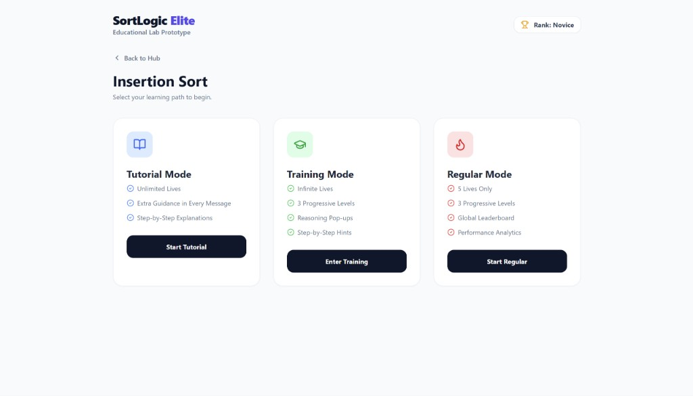
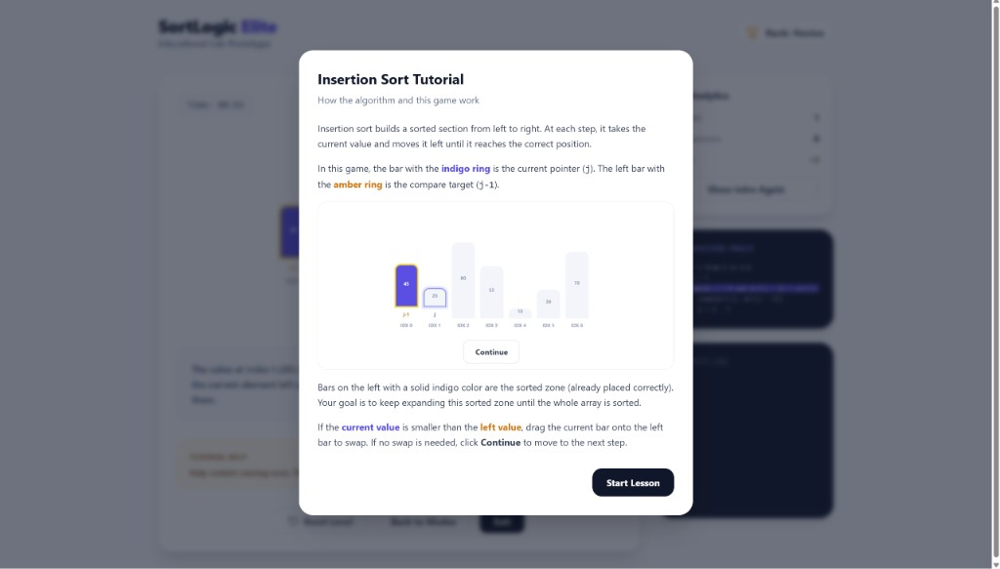
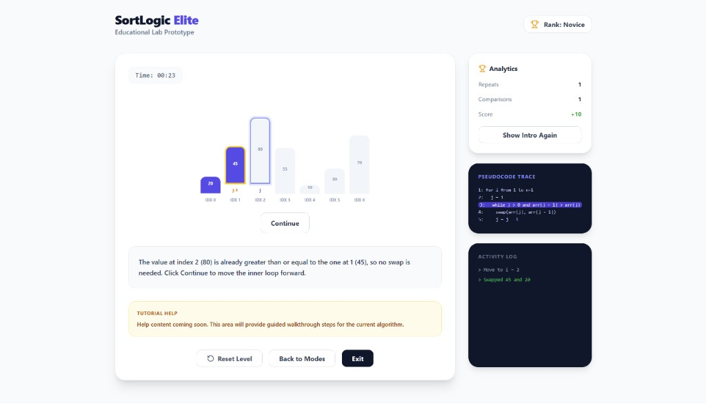
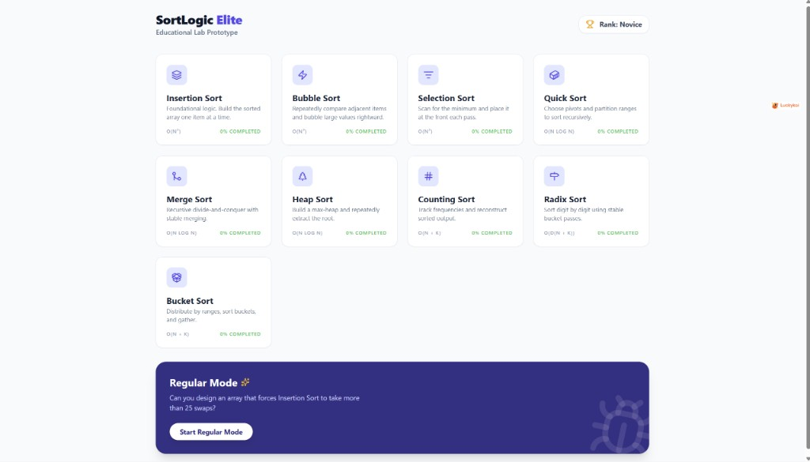
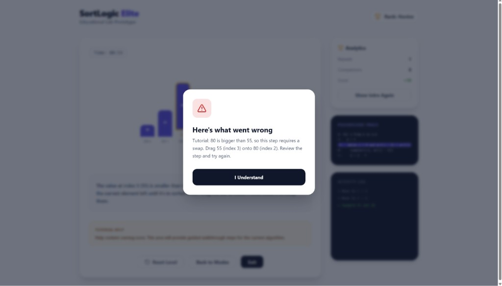

Gamified Educational Lab Prototype for Sorting Algorithms
Hailey Pang | Midterm Presentation | Prof. Lama Hamandi
Core motivation: turn “seeing sorting” into “doing sorting correctly under constraints.”

This project combines all three strengths in one system:
Research gap addressed: high-agency, multi-algorithm practice platform with feedback and mastery tracking.
Can a gamified, multi-mode sorting system improve procedural understanding more effectively than observation-only tools?



Prototype is fully usable end-to-end for interactive sorting practice.
Interpretation: The design appears to promote procedural reasoning, not just visual familiarity.

Risk level is low: major engineering milestones are complete; focus shifts to empirical validation.
Reusable algorithm pages and modular UI states.
Consistent visual language across all game modes.
Fast development and persistent mastery tracking.
Thank you. Questions?